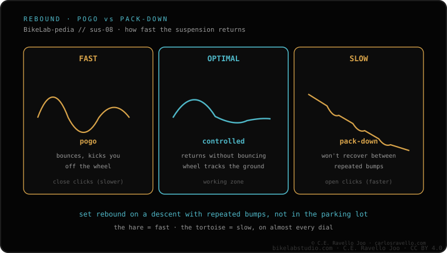

Rebound is the speed at which the fork extends back after compressing, not its firmness. Too fast: it bounces, pogos, kicks back and lifts the wheel off the ground. Too slow: through consecutive bumps it stays packed down (pack-down) and loses travel. Start in the middle of the knob's range and find the balance: fast enough to recover between hits, slow enough not to buck. If you raise the air pressure for your weight, you'll usually need slightly more rebound damping. Dial it in after you've set the sag.
Rebound isn't "tighten until it feels right": it's tuned to your terrain and your feel. Here's the order to find your sweet spot.
How to find your sweet spot, step by step
1 · Start in the middle — Set the rebound knob to a middle position in its range. That's the neutral point from which you'll decide whether you have too much or too little damping.
2 · Read the kickback (too fast) — If the fork bounces, pogos and bucks you after a hit, you're too fast. Add rebound damping (slow it down) one click and ride again.
3 · Read the pack-down (too slow) — If through consecutive bumps it stays packed down and feels stuck and harsh because it's losing travel, you're too slow. Remove damping (speed it up) one click.
4 · Find the balance — Fast enough to recover between hits, slow enough not to buck. It's a compromise based on your terrain and your taste, not a fixed number.
5 · Re-check if you change pressure — More air pressure usually means slightly more rebound damping. If you touch the pressure, re-check the rebound.

Too fast bounces and bucks; too slow packs down and loses travel; the balance is in the middle.
Common mistake: confusing rebound with firmness. If the fork feels harsh, that's pressure or compression, not rebound. Rebound only changes how fast the fork extends back after the hit.
Can't find the sweet spot?
Tell us your fork, your weight and how it feels (bouncing or packing down) and we'll point you which way to move the rebound. Message us on WhatsApp
Frequently asked questions
What is rebound?
The speed at which the fork extends back after a hit, not its firmness. You adjust it with the rebound knob.
How do I know if it's too fast or too slow?
Too fast: it bounces, pogos, kicks back, lifts off. Too slow: it packs down through consecutive bumps and loses travel.
Where do I start?
In the middle of the knob's range, then find the balance. More air pressure usually means slightly more damping.